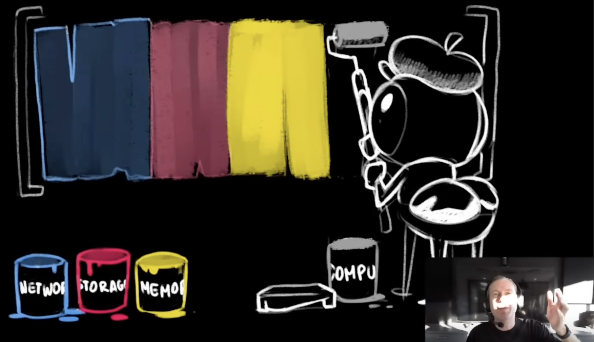
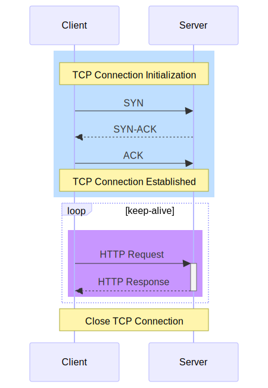
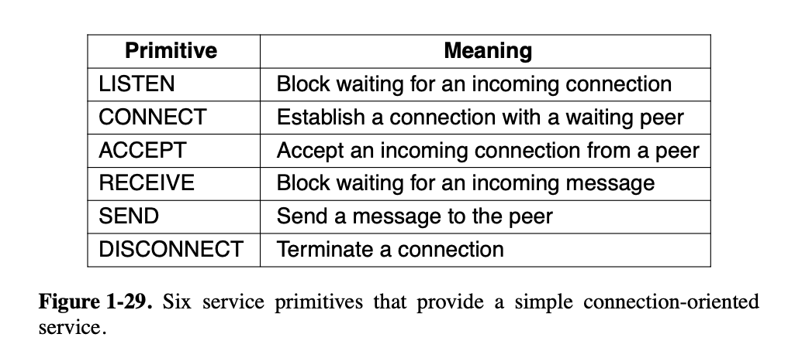

HTTP Server in Rust
May 2025
~5k words
Why Write an HTTP-Server
I wrote an almost spec-compliant HTTP/1.1 server in Rust to demystify
networks.
In this post I go over the architecture and explain the main parts as
well as interesting stuff I learned along the way. Code:
nicolaspllr1/mini-http-server on github.
A small passage from Joran 's stellar presentation of TigerBeetle stuck with me. There are 4 colours of programming : - Network - Compute - Memory - Storage
Programming is about composing systems from these fundamental domains. Among the four, networks were particularly mysterious to me. Take the Internet, how can this possibly work ?
So I studied the theory on one hand, and on the other, I got busy with 2 practical projects to build solid foundations:
- an HTTP/1.1 server ( topic of this blog post )
- a (forwarding) DNS server
Implementing things really dispel all the magic that can seem daunting before doing the practical work.
Both projects were made in Rust for more fun and learning. This post will focus on the HTTP server implementation.
You can check out/fork the repo: mini-http-server . Run the server yourself and host your own websites ! ;)
note: DNS server impl. is here , but it's less polished. We will solely focus on the HTTP server in this post.
Getting Started and Goals
Codecrafters
Kicked off my implementation embarking on codecrafters http-server project.
On every push to the distant repo, you benefit from their tests suite. This is awesome and helps a lot. On the contrary, at the end of the project, I added features not yet covered by their harness which made it way more painful to assure correctness.
Finishing the codecrafters project, you will have implemented the very basics:
- get/post request parsing on a couple of paths
- leveraging headers
- supporting gzip compression
- response formatting, status codes This gets you from 0 to some level of understanding. Even if these features seem basic, concrete practice elevates theoretical understanding to another level.
That's why theory and practice should be worked on concurrently (what's the best concurrency model for skill acquisition ? Is it the same in most fields? good questions!).
Personal Goal
In my case, I wanted my server to serve my own blog to my browser. However the implementation I had at the end of the codecrafters project was not enough, from a purely practical standpoint.
Small but important bits were missing - like properly identifying content types . I was lucky they added an extension to implement keep-alive , which I wanted to add to get closer to full HTTP/1.1 compliance.
It’s a good example of how small protocol details (like Content-Type: text/html) are critical in practice, even if they’re easy to overlook and/or simple to implement.
Server Architecture - Looping Over Incoming Requests
Core Architecture
At its core, the HTTP server runs an event loop: it listens for incoming TCP connections, processes the HTTP request, generates a response, and sends it back.
We’re in the classic client/server situation:

So the heart of the HTTP server is this loop over incoming requests :
// listening for TCP requests coming in at our address
let listener = TcpListener::bind(&self.address)?;
for stream in listener.incoming() {
// handle incoming stream
}
Each
stream
represents a connection from a client. We handle them in 3 steps:
- Parsing the incoming http-request. The request is received as a "byte stream" through the TCP connection. The bytes are parsed assuming the HTTP protocol is followed.
- Constructing an http-response. The request is processed to build the appropriate response.
- Send the response. The response is sent back to the client through the TCP connection.
fn handle_stream(mut stream: TcpStream) -> Result<(), HandlingError> {
// parse request
let http_request = HttpRequest::build_from_stream(&mut stream)?;
// construct response
let http_response = HttpResponse::build_from_request(&http_request)?;
// send back response
http_response.write_to(&mut stream)?;
Ok(())
}Adding keepalive
Keep-alive was surprisingly easy to add to my server, a simple while
loop over a boolean
keep_alive
, defaulting to true, and set to false based on the incoming request
keep-alive header. Although simple, this feature of HTTP/1.1 is very
important for the performance of the protocol and one of the big changes
going from 1.0 to 1.1. This is because HTTP often runs on top of TCP,
and establishing TCP connections is not fast compared to a single
round-trip between client and server.
See the chapter on keep-alive of the awesome High Performance Browser Networking by Ilya Grigorik .
Before keepalive :
fn handle_stream(mut stream: TcpStream) -> Result<(), Box<dyn Error>> {
match HttpRequest::build_from_stream(&mut stream) {
Ok(http_request) => {
let http_response = HttpResponse::new_from_request(&http_request);
http_response.write_to(&mut stream)?;
}
Err(e) => {
eprintln!("error parsing the http-request: {e}");
let http_response = HttpResponse::new_from_bad_request(&e);
http_response.write_to(&mut stream)?;
}
}With keepalive:
fn handle_stream(mut stream: TcpStream) -> Result<(), Box<dyn Error>> {
while keep_alive {
match HttpRequest::build_from_stream(&mut stream) {
Ok(http_request) => {
keep_alive = http_request.keep_alive();
let http_response = HttpResponse::new_from_request(&http_request);
http_response.write_to(&mut stream)?;
}
Err(e) => {
eprintln!("error parsing the http-request: {e}");
keep_alive = false; // terminate connection
let http_response = HttpResponse::new_from_bad_request(&e);
http_response.write_to(&mut stream)?;
}
}
}
Where the keep_alive field in
HttpRequest
is set parsing the request headers. The default HTTP/1.1 behavior is
keeping the TCP connection alive. Only if a
Connection
:
close
header
is found will the server close the connection right after responding.
Small utility implemented on
HttpRequest
to determine if the server should close the TCP connection:
pub fn keep_alive(&self) -> bool {
match self.headers.get("connection") {
Some(s) if s == "close" => false,
Some(_) | None => true,
}
}Next, let's look at the abstraction that allows us to "receive" and "send" data to-and-from the client to the server: sockets .
"Sockets"
Berkeley Sockets
Let's explain what is a "socket". Before working on this project, I had often heard expression like "socket programming" or just the term "socket" but never understood what this was all about.
A network socket is an abstract reference to a communication endpoint . It acts as a "handle" on the endpoint providing an API for the communication path from one end's perspective.
This means a socket can be used to perform operation on the communication endpoint - think sending/receiving data. In the Unix spirit ( "everything is a file" ), a socket abstracts the communication endpoint as a file descriptor although the analogy has its limits (which?). The parallels between doing file I/O and networking I/O include comparing read/write with receive/send.

note:
sd
for socket descriptor,
fd
for file descriptor
A socket to do networking on the internet is defined by three pieces of information :
- a local socket address: IP address + port
- a remote socket address: IP address + port
- a transport protocol: say TCP or UDP
See this example of a full network socket definition:

-
Local socket address: here a
private
IP address from the
192 . 168 . 0 . 0 / 16range (defined in RFC 1918 : "Address Allocation for Private Internets" ) with the standard port for HTTP (80) -
Remote socket address: here an IP address is from the
203 . 0 . 113 . 0 / 24block. This block is specifically reserved for documentation and examples (as per RFC 5737 : "IPv4 Address Blocks Reserved for Documentation" ) + the standard port for HTTPS (443)
Rust abstracts these network sockets with its
SocketAddr
struct.
Sockets in Rust -
TcpStream
Rust gives you high-level access to sockets with its standard library:
-
TcpListenerrepresents a listening socket -
TcpStream, represents a connected socket ready to send/receive data
Rust structs and their traits/methods maps to the historical Berkeley sockets API:

A
TcpStream
can be obtained from a
TcpListener
after
bind
ing the listener to a particular socket-address: ip address + port
number, remember the triplet. Then, you call
incoming
on the binded listener. This gives us an iterator over incoming TCP
requests to our local ip address + port.
let listener = TcpListener::bind(&local_socket_addr)?;
for tcp_stream in listener.incoming() {
// each stream is a new client connection
}Parsing Incoming Requests
Reading from
TcpStream
TcpStream
implements the
Read
and
Write
traits. This means we can read/write bytes directly from/to an instance
of a
TcpStream
using the methods provided by these trait.
However, these methods are the basics of I/O operations. Critically,
they are
not
buffered: see [
Read
vs
BufRead
](###
Read
vs
BufRead
)
Difficulty: No EOF marker in headers
The first problem I ran into trying to read and parse HTTP request is
that they do
not
have EOF (end of file) markers ! My first naive approach, i.e.
read_until_end
did not work. Never ended !
I had to read line by line, FSM-style. No need for a real FSM as the reading steps are always the same, the chain of reads is fixed: request-line, then http method, then optional headers and finally optional body.
This strategy turns into a sequence of
read_line
and
read_exact
leveraging a
BufRead
er.
However, these many sequential small reads would be very inefficient if
done through the basic
Read
trait. We would fire one system call per read! So this strategy turns
into a sequence of
read_line
and
read_exact
- same methods - but leveraging a
BufRead
er. More on that in the [
Read
vs
BufRead
](###
Read
vs
BufRead
) section.
Initialising the buffered reader:
let mut reader = BufReader::new(stream);Example parsing the request line:
// Read the *request-line*
let mut request_line = String::new();
reader.read_line(&mut request_line)?;
// Parse the *request-line*
let [http_method, request_target, protocol_version]: [&str; 3] = request_line
.split_whitespace()
.collect::<Vec<_>>()
.try_into()
.map_err(|_| RequestError::RequestLine(request_line.to_string()))?;
let http_method = http_method.parse::<HttpMethod>()?; // turbofish + shadowing + ?
let protocol_version = protocol_version.parse::<HttpVersion>()?;
Read
vs
BufRead
I/O in Rust - Read vs BufRead
I/O operations in Rust have felt very different than I what experienced in other higher-level language like Python. Rust does not hide the many different ways in which you can carry read/write operations.
For example, I got to wrap my head around the
Read
and
BufRead
traits. This distinction exposes very interesting trade-offs which I was
completely unaware of using higher-level languages in the past.
When you read from a source - in our case incoming bytes from the network - you can choose to:
-
"greedily" read new bytes whenever they become available - potentially
one-by-one. This corresponds to the fundamental
Readtrait, the most basic trait for reading bytes from a source. -
wait a bit to read a larger chunk of data all at once and store it in
memory, i.e. in a data buffer - that's
BufRead.
The
Read
vs
BufRead
distinction matters because every reads using the
Read
trait translate to a system call to the operaint system. However
systems calls
are not cheap
. That's why the intermediate
buffer
leveraged by the
BufRead
trait is so powerful. Once the buffer has been filled, subsequent read
calls will read from it instead of reading from the source. This
indirection allows to make rapid, small read calls from memory (fast) by
by-passing the need to make lots of system calls (slow).
Depending on the access pattern, one trait may be far better than the other performance-wise:
-
if you plan to read once or read exactly n bytes:
Readis perfect -
if you plan to read multiple times from the same source, typically one
line at a time,
BufReadis perfect. The buffer overhead is well-worth it as you pay for fewer "true" reads - built upon system calls. Instead you read from memory which is faster.
The Rust doc for
BufRead
<
R
>
struct
summarizes this clearly:
The
BufReader < R >struct adds buffering to any reader.It can be excessively inefficient to work directly with a
Readinstance. For example, every call toreadonTcpStreamresults in a system call. ABufReader < R >performs large, infrequent reads on the underlyingReadand maintains an in-memory buffer of the results.
BufReader < R >can improve the speed of programs that make small and repeated read calls to the same file or network socket. It does not help when reading very large amounts at once, or reading just one or a few times. It also provides no advantage when reading from a source that is already in memory, like aVec.
Toy Benchmark
I spun up a quick benchmark - I admit courtesy of my favourite LLM - to measure the difference between looping over plain reads and looping over buffered reads over a big text file.
Benchmarks with
hyperfine
. On Debug and Release builds,
BufRead
method was respectively
4.95x and 23.6x faster
than
Read
method:
Practical Examples from my HTTP Server
Example reading the body. In this case, the reader is already a buffered
reader as we first read line by line the incoming payload. But when it
comes to the body, we know its length in bytes. So we only have to read
once:
read_exact
is perfect as we know how much bytes we want.
// Read the *body* if any
if let Some(n_bytes_str) = headers.get("content-length") {
let n_bytes = n_bytes_str
.parse::<usize>()
.map_err(RequestError::BodyContentLength)?;
let mut body_buf = vec![0; n_bytes];
reader.read_exact(&mut body_buf)?;
let body = String::from_utf8(body_buf).map_err(RequestError::BodyUtf8)?;
builder.with_body(&body);
};But when parsing headers, I use one read call for every single header. A buffered read is way more efficient in this case:
// Read eventual *headers*
let mut headers: HashMap<String, String> = HashMap::new();
let mut header_line = String::new();
loop {
reader.read_line(&mut header_line)?;
if header_line == "\r\n" {
break;
}
let (header_name, header_value) = header_line
.split_once(':')
.ok_or(RequestError::Header(header_line.to_string()))?;
headers.insert(
header_name.to_lowercase().to_string(), // header names are case-insensitive
header_value.trim().to_string(),
);
header_line.clear();
}
builder.with_headers(&headers);Constructing Responses
Builder Pattern
Classic of programming but had never implemented one as the need never
arose. Here, I was creating lots of
HttpResponse
s with minor differences in one big match statement. Using the
builder-pattern significantly reduces the loc and increased readibilty
in this part of the code. I also used it to build the [[#Parsing
Incoming Requests|HttpRequest]] as you saw previously.
Typical
Builder
trait. I need a
new
method to get one, and a
build
to build what the builder is supposed to build - the generic type
T
:
pub trait Builder<T> {
fn new() -> Self;
fn build(self) -> T;
}
Then it's very ergonomic to build a new
T
. See this example where a
Builder
<
HttpResponse
>
is used:
pub fn new_from_bad_request(error: &RequestError) -> HttpResponse {
let mut builder = HttpResponse::builder();
builder.with_status_code(StatusCode::BadRequest);
let body_str = error.to_string();
let body = body_str.as_bytes();
builder.with_body(body);
builder.with_content_length(body.len());
builder.build()
}This comes at the cost of a little bit of boiler-plate to implement the pattern itself:
impl HttpResponseBuilder {
pub fn with_protocol_version(&mut self, protocol_version: HttpVersion) {
self.http_response.protocol_version = protocol_version;
}
pub fn with_status_code(&mut self, status_code: StatusCode) {
self.http_response.status_code = status_code;
}
pub fn with_content_type(&mut self, content_type: ContentType) {
self.http_response.content_type = content_type;
}
pub fn with_content_length(&mut self, content_length: usize) {
self.http_response.content_length = content_length;
}
/* ... */
}This boilerplate can be mitigated using macros or using cratesproviding such macros or nice derive attributes ( derive_builder ) .
Build vs New Semantics
In the book
, it is explained that
new
functions are expected to never fail while a
build
functions may.
So I refactored my
HttpRequest
::
build_from_stream
(&
mut
stream
)
to
new_from_stream
as I though it should never err, at worse it should create a new http
response with a 500 (internal error) code. The HttpRequest however can
fail and I therefore match on its
build_from_stream
method :
match HttpRequest::build_from_stream(&mut stream) {
Ok(http_request) => {
keep_alive = http_request.keep_alive();
let http_response = HttpResponse::new_from_request(&http_request, data_dir);
http_response.write_to(&mut stream)?;
}
Err(e) => {
keep_alive = false; // terminate connection
let http_response = HttpResponse::new_from_bad_request(&e);
http_response.write_to(&mut stream)?;
}
}--> I wrote 2 function that both create a new http-response without failing:
-
new_from_request -
new_from_bad_request
And if
new_from_request
was to "fail" internally, for instance somewhere in the internals of
some endpoint, then a fallback to an http-response similar to what
new_from_bad_request
outputs is actually returned.
-
I also used the builder pattern for the
HttpRequeststruct as well as myConfigstruct I build from the combination of CLI args, a toml config file and potential env. variables.
Error handling - levels of maturity
- Error Handling in Rust from Andrew Gallent, absolute gem. Guided me to enhance the error handling going up the levels of maturity.
- I also liked watching Logan Smith's video - A Simpler Way to See Results and Tim McNamara - 4 levels of error handling on Rust Nation UK.
-
absolute basics just because Rust forces you to do something about errors :
unwraps, or betterexpects Here the difference between a personal project, a simple binary, vs a professional / used-by-others library is big. The former can reasonably stops here, while the later must go way further up the error-handling maturity scale. -
Start using
Result < T , E >, starting with the opaqueResult < T , String > -
Moving to the general
Result < T , Box <dyn Error >> -
And finally, defining and composing custom error type,
Result < T , MyCustomError >, typically enums (why not struct? structs vs enums for error types)
Example:
HttpRequest
::
build_from_stream
can fail to parse the request --> returns a
Result
<
HttpRequest
,
RequestError
>
.
pub enum RequestError {
Io(std::io::Error),
RequestLine(String),
Method(String),
ProtocolVersion(String),
Header(String),
BodyUtf8(std::string::FromUtf8Error),
BodyContentLength(ParseIntError),
}With some amount of boilerplate to make it usable:
impl From<std::io::Error> for RequestError {
fn from(e: std::io::Error) -> RequestError {
RequestError::Io(e)
}
}
impl From<HttpMethodParseError> for RequestError {
fn from(e: HttpMethodParseError) -> RequestError {
RequestError::Method(e.found)
}
}
impl From<HttpVersionParseError> for RequestError {
fn from(e: HttpVersionParseError) -> RequestError {
RequestError::ProtocolVersion(e.found)
}
}
impl fmt::Display for RequestError {
fn fmt(&self, f: &mut fmt::Formatter<'_>) -> fmt::Result {
match self {
RequestError::RequestLine(s) => write!(f, "malformed request line. Expected: <method> <request-target> <protocol-version>. Got: {s}"),
RequestError::Method(m) => write!(f, "unsupported HTTP method: {m}"),
RequestError::ProtocolVersion(v) => write!(f, "unsupported HTTP protocol version: {v}"),
RequestError::Header(h) => write!(f, "invalid header: {h}"),
RequestError::BodyUtf8(b) => write!(f, "body is not valid UTF-8: {b}"),
RequestError::BodyContentLength(l) => {
write!(f, "error parsing the body length: {l}")
}
RequestError::Io(e) => write!(f, "I/O while reading request: {e}"),
}
}
}
impl std::error::Error for RequestError {}
Crates like thiserror or Anyhow are said to help a lot with this: writing good error types and working with them. For instance, thiserror writes much of this boilerplate code through simple macros.
Sending the Response Back
Display vs Write Traits
-
Write(dealing with bytes) vsDisplay(dealing with str)
pub fn write_to<W: Write>(&self, writer: &mut W) -> std::io::Result<()> {
todo!();
}impl Display for HttpResponse {
fn fmt(&self, f: &mut std::fmt::Formatter<'_>) -> std::fmt::Result {
todo!();
}At first I was very confused and tried to use the display trait to "write" my http-response struct the right way and send this string as bytes as the answer.
It looks something like this:
impl Display for HttpResponse {
fn fmt(&self, f: &mut std::fmt::Formatter<'_>) -> std::fmt::Result {
// Status line
write!(f, "{} {}\r\n", self.protocol_version, self.status_code,)?;
// Content-type
write!(f, "Content-Type: {}\r\n", self.content_type)?;
// ...
However, the intermediary string is not needed as one can directly work
with a writer implementing the
Write
trait, which was I was actually exactly what I was looking for.
Example implementing
write_to
taking in a writer for my
HttpResponse
:
impl HttpResponse {
pub fn write_to<W: Write>(&self, writer: &mut W) -> std::io::Result<()> {
// Status line
write!(writer, "{} {}\r\n", self.protocol_version, self.status_code)?;
// Content-type
write!(writer, "content-type: {}\r\n", self.content_type)?;
// ...
}Notice how it looks very similar to the implementation of for Display!
With the first approach, going
HttpResponse
--> utf-8 string through
Display
--> bytes, I ran into lots of problems, especially related to the
hexadecimal representation, with new utf-8 characters being inserted vs
although I just wanted to
write
the exact raw bytes to the tcp stream. This got me falling into the
string, UTF-8, bytes rabbit hole, but I stopped before going too far
down this one (for now!).
Also, relying on the
Display
trait really came to bite me when implementing gzip-compression feature,
which is when I had to stop and rethink the strategy, ultimately going
the
write_to
route.
Performance
Concurrency
In the real world, an HTTP server may deal with multiple quasi-simultaneous requests. These are typically independent: one request might be client A asking for index.html, while another from client B requires a database query.
To handle this concurrency, there are two broad strategies. Using:
- a multi-threaded architecture ('true' parallelism, using multiple OS threads)
- or an asynchronous architecture (single thread with non-blocking calls).
As I am learning Rust through the book , I followed its multi-threaded server implementation . It shows how to define a pool of workers, each executing tasks in their own thread, coordinated via message-passing communication.
The key structure is the
ThreadPool
:
pub struct ThreadPool {
workers: Vec<Worker>,
sender: Option<mpsc::Sender<Job>>,
}
struct Worker {
id: usize,
thread: Option<thread::JoinHandle<()>>,
}
type Job = Box<dyn FnOnce() + Send + 'static>;
It organizes threads into a
Vec
<
Worker
>
. The number of workers is fixed at the beginning. We don't want this
number to skyrocket unbounded as the server receives more and more
requests at once. Instead, new tasks (like handling a new TCP stream)
are queued by the
ThreadPool
and available workers pick them up to execute them.
But how are tasks 'sent' from the
ThreadPool
(on the main thread) to the workers (on other threads) ?
The key to this inter-thread communication is the intermediate queue implemented using message-passing via channels :
-
The
ThreadPoolowns theSender, while every worker is given a shared (Arc) clone of thereceiver. - Then, worker enter a loop where they listen for a new tasks put on the communication channel (acting as the queue), execute it, and get back to listening.
The type used to describe a 'task' here is
Job
, an alias for the
trait object
:
Box
<dyn
FnOnce
()
+
Send
+
'
static
>
.
-
The
Boxmakes it a (smart) pointer to a block of memory allocated on the heap. What it points to is adyntype meaning it's size will only be known at runtime, it's dynamic. However the pointer size can always be known at compile-time, it's fixed whatever the size of the underlying object stored on the heap. The only thing we know at at compile time about this object is its trait bound: it will beFnOnce () + Send + ' static. -
The trait bound
FnOnce () + Send + ' staticcorresponds: to a function (or closure in our case!) you can call once (as it may consume variables), that isSendmeaning safe to pass between threads andstaticmeaning references to this object can live as long as the program (lifetime is the lifetime of the program itself). This corresponds to a closure in our program that we want a thread to execute.
In practice, each incoming connection is wrapped in a closure and sent to the thread pool for execution:
for stream in listener.incoming() {
match stream {
Ok(stream) => {
// passing the closure we want a worker to execute
pool.execute(move || {
match Self::handle_stream(stream) {
Ok(()) => println!("Successfully handled stream"),
Err(e) => eprintln!("Error handling the stream: {e}"),
};
});
}
Err(e) => {
return Err(format!("Error accepting the connection: {e}").into());
}
}
}
The closure takes ownership of the incoming stream (see the
move
keyword) and calls
handle_stream
to process it.
-
The thread is typed as
Option < thread :: JoinHandle <()>>. The use ofOptionis a trick to allow taking ownership of the thread handle later (e.g., when shutting down the thread), as Rust doesn't allow moving out of a struct field unless it's wrapped in anOption. This enables calling. take ()on theOption, leavingNonebehind and transferring ownership of the actual handle.
impl Drop for ThreadPool {
fn drop(&mut self) {
drop(self.sender.take());
for worker in &mut self.workers {
println!("Shutting down worker {}", worker.id);
if let Some(thread) = worker.thread.take() { // taking ownership of the thread using the Option trick
thread.join().unwrap();
}
}
}
}-
JoinHandle <()>is a handle to a spawned thread, which can be used to wait for the thread to finish (by calling. join ()). The()means the thread returns no meaningful value - it just returns the unit type().
A very exciting next step will be to add some async flavour to this implementation to really push performance up.
Static vs Dynamic Dispatch
Enum Approach
To represent the different endpoints my HTTP server supports, I wrote an
Endpoint
enum:
pub enum Endpoint {
Echo,
UserAgent,
Sleep,
File,
UrlPath,
}
Once an
HttpRequest
has been parsed, I determine which endpoint it targets and use a large
match
statement to handle each case:
match self {
Endpoint::Echo => {
// handle echo request
}
Endpoint::UserAgent => {
// handle user-agent request
}
Endpoint::Sleep => {
// handle sleep request
}
// And so on ... This match statement goes on listing all `Endpoint` variant.
}Trait Approach
However there is an alternative design! One can use
trait objects
. Instead of a centralized match, you define something like a
RequestHandler
trait:
trait RequestHandler {
fn handle_request(&self, req: &HttpRequest) -> HttpResponse;
}Each endpoint becomes a separate type that implements this trait. For example:
struct EchoHandler;
impl RequestHandler for EchoHandler {
fn handle(&self, req: &HttpRequest) -> HttpResponse {
// implementation here
}
}
Now, instead of matching, you just call
handler
.
handle
(&
request
)
- the correct method is chosen at
runtime
via
dynamic dispatch
(using a v-table internally).
Trade-Offs
| Enum-based (Static Dispatch) | Trait-based (Dynamic Dispatch) |
|---|---|
| Fast (compile-time dispatch) | Slightly slower (runtime lookup) |
Centralized logic via
match
|
Decentralized via trait impls |
| Harder to extend without editing internals | Easy to extend without modifying core logic |
| Great for small, known sets | Great for plugin-style extensibility |
When to use which ? The enum-based approach works well for small-scale , tightly scoped projects where you control all endpoints. But as the number of endpoints grows—or if you want to let users extend the server as a library —the trait-based approach scales much better.
With traits, adding a new endpoint just means implementing the
RequestHandler
trait. No need to touch the internals of the dispatcher logic.
Think of the enum version as a monolith. The trait version is more like a plugin system.
Notes:
-
In the trait approach, you’d typically have some routing logic that
maps the request path to a
Box <dyn RequestHandler >. - You can combine both approaches: enums for internal core endpoints, traits for user-extensible ones
Next Steps
-
go async
-
move to using an error-handling crate like thiserror or anyhow
-
try to allocate less, go more zero-copy
-
design/run proper benchmarks
-
building a more robust configuration + logging system
-
better tests, unit and integration
-
fuzzing my request parser ?
Try TCP from scratch ?
Very different from writing an HTTP server "from scratch". See how the boss Jon Gjengset tackles this problem!
TCP abstraction we leverage actually makes use of the TCP impl. by the OS. That's why writing and running your own TCP server? is more tricky than http, you have to bypass this service from the OS (see Jon streams on TCP).